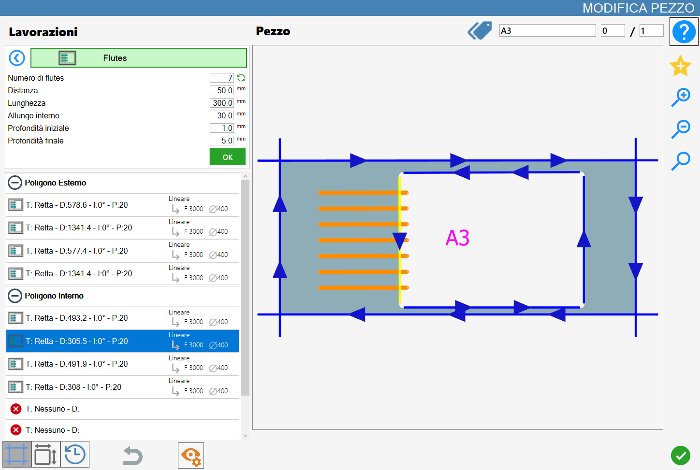
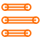
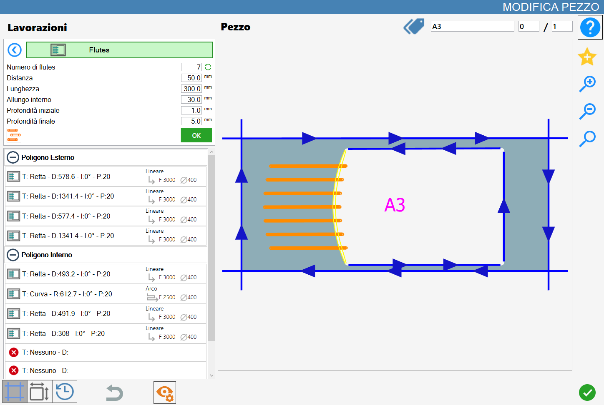

Questa funzionalità permette di applicare lavorazioni con l’utensile di tipo fresa attualmente montato in macchina nel taglio selezionato, curva o retta che sia, al fine di ottenere flutes.

Parametri
Il risultato varia a seconda del valore dei seguenti parametri:
Numero di flutes | Indica quanti flutes applicare alla lavorazione corrente sul taglio selezionato. |
 | Ricalcola numero |
Distanza | Questo valore rappresenta la distanza tra i flutes, tiene conto del diametro dell’utensile montato. |
Lunghezza | Indica quanto distante i flutes entreranno nel taglio. |
Allungo interno | Indica quanto distante i flutes saranno estesi oltre il taglio di riferimento. |
Profondità iniziale | Penetrazione nel materiale nel punto iniziale della scanalatura di drenaggio. |
Profondità finale | Penetrazione nel materiale nel punto finale della scanalatura di drenaggio. |
Tipologia di flutes su archi | Per i flutes su curve sono disponibili tre modalità illustrate in seguito. |
Ricalcola numero
Premendo il pulsante collocato sulla destra rispetto al numero di flutes permette di riempire il taglio selezionato con più flutes possibile, in relazione al valore degli altri parametri.
Nella seguente immagine di esempio è possibile osservare il risultato del riempimento flutes, in contrapposizione alla prima immagine a inizio capitolo.

Modalità flutes su archi
Quando viene selezionato un taglio curvo di un poligono, verrà visualizzato un nuovo parametro necessario per assumere uno tra tre valori:
Radiali | |
 | Allineamento ad arco |
 | Allineamento a tangente |
Modalità 1: Radiali
In questa modalità i flutes condividono un punto di origine e sono perpendicolari rispetto alla relativa tangente sul taglio curvo selezionato.

Modalità 2: Allineamento ad arco
In questa modalità i flutes sono paralleli tra loro e sono allineati ad arco sia per la distanza sia per l’allungo interno.

Modalità 3: Allineamento a tangente
In questa modalità i flutes sono paralleli tra loro e sono allineati ad arco per l’allungo interno, mentre sono allungati fino al raggiungimento della tangente che dista tanto quanto specificato dal valore lunghezza.

Esecuzione della lavorazione
È possibile applicare la lavorazione premendo il pulsante a sinistra del taglio opportuno nella lista dei poligoni.
Un’icona rossa con una 'X' indica che la lavorazione non può essere applicata al taglio desiderato.
Una volta ottenuto il risultato desiderato, visualizzato e costantemente aggiornato nell’anteprima della lavorazione, l’operatore può confermare l’operazione premendo il pulsante verde “OK”, situato appena sotto i parametri impostati.
I flutes mostrati nell’anteprima verranno quindi applicati al taglio selezionato: il loro colore passerà a un verde scuro, sia nell’anteprima che successivamente nell’area di lavoro, a indicarne l’avvenuta applicazione.

Anche l’elenco dei tagli, situato sul lato sinistro, verrà aggiornato in base alla nuova lavorazione applicata e ai parametri dei flutes.
È possibile applicare più lavorazioni di questo tipo a un singolo taglio, purché i relativi parametri non si ripetano.